3. أساسيات تطوير الويب بلغة Java
سنناقش الآن تطوير تطبيقات الويب الديناميكية، أي التطبيقات التي يتم فيها إنشاء صفحات HTML المرسلة إلى المستخدم بواسطة البرامج.
3.1. إنشاء مشروع ويب في Eclipse
سنقوم بتطوير أول تطبيق ويب لنا باستخدام Eclipse/Tomcat. وسنتبع عملية مشابهة لتلك المستخدمة لإنشاء تطبيق ويب بدون Eclipse. مع تشغيل Eclipse، نقوم بإنشاء مشروع جديد:

الذي نحدده كمشروع ويب ديناميكي:
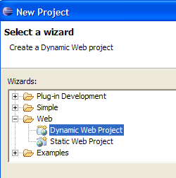
في الصفحة الأولى من معالج الإنشاء، نحدد اسم المشروع [1] وموقعه [2]:

في الصفحة الثانية من المعالج، نقبل القيم الافتراضية:

تطلب منا الصفحة الأخيرة من المعالج تحديد سياق التطبيق [3]:

بمجرد تأكيد المعالج بالنقر على [Finish]، يتصل Eclipse بالموقع [http://java.sun.com] لاسترداد مستندات معينة يرغب في تخزينها مؤقتًا لتجنب حركة مرور غير ضرورية على الشبكة. ثم يُطلب منك الموافقة على اتفاقية الترخيص:

نوافق عليها. يقوم Eclipse بإنشاء مشروع الويب. لعرضه، يستخدم بيئة، تسمى منظور، تختلف عن تلك المستخدمة في مشروع Java التقليدي:

المنظور المرتبط بمشروع الويب هو منظور J2EE. نقبله لنرى... والنتيجة هي كما يلي:
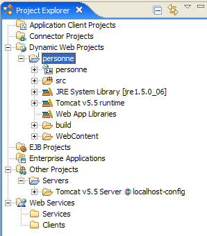
منظور J2EE معقد بشكل غير ضروري لمشاريع الويب البسيطة. في هذه الحالة، يكفي منظور Java. للوصول إليه، نستخدم الخيار [Window -> Open perspective -> Java]:
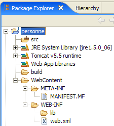
src: سيحتوي على كود Java لفئات التطبيق بالإضافة إلى الملفات التي يجب أن تكون في مسار فئات التطبيق.
build/classes (غير معروض): سيحتوي على ملفات .class للفئات المجمعة بالإضافة إلى نسخة من جميع الملفات غير .java الموجودة في src. غالبًا ما يستخدم تطبيق الويب ما يُسمى بملفات "الموارد" التي يجب أن تكون موجودة في مسار فئات التطبيق، أي مجموعة الدلائل التي تبحث فيها JVM عندما يشير التطبيق إلى فئة، سواء أثناء التجميع أو في وقت التشغيل. يضمن Eclipse أن يكون دليل build/classes جزءًا من مسار فئات الويب. يتم وضع ملفات "الموارد" في مجلد src، مع العلم أن Eclipse سينسخها تلقائيًا إلى build/classes.
WebContent: سيحتوي على موارد تطبيق الويب التي لا تحتاج إلى أن تكون في مسار فئات التطبيق.
WEB-INF/lib: يحتوي على ملفات .jar التي يتطلبها تطبيق الويب.
دعونا نفحص محتويات ملف [WEB-INF/web.xml] الذي يقوم بتكوين تطبيق [person]:
<?xml version="1.0" encoding="UTF-8"?>
<web-app id="WebApp_ID" version="2.4" xmlns="http://java.sun.com/xml/ns/j2ee" xmlns:xsi="http://www.w3.org/2001/XMLSchema-instance" xsi:schemaLocation="http://java.sun.com/xml/ns/j2ee http://java.sun.com/xml/ns/j2ee/web-app_2_4.xsd">
<display-name> personne</display-name>
<welcome-file-list>
<welcome-file>index.html</welcome-file>
<welcome-file>index.htm</welcome-file>
<welcome-file>index.jsp</welcome-file>
<welcome-file>default.html</welcome-file>
<welcome-file>default.htm</welcome-file>
<welcome-file>default.jsp</welcome-file>
</welcome-file-list>
</web-app>
لقد سبق أن صادفنا هذا النوع من التكوين عندما درسنا إنشاء صفحات الترحيب في القسم 2.3.4. لا يقوم هذا الملف بأي شيء سوى تعريف سلسلة من صفحات الترحيب. نحتفظ بالصفحة الأولى فقط. يصبح ملف [web.xml] كما يلي:
<?xml version="1.0" encoding="UTF-8"?>
<web-app id="WebApp_ID" version="2.4"
xmlns="http://java.sun.com/xml/ns/j2ee"
xmlns:xsi="http://www.w3.org/2001/XMLSchema-instance"
xsi:schemaLocation="http://java.sun.com/xml/ns/j2ee http://java.sun.com/xml/ns/j2ee/web-app_2_4.xsd">
<display-name>personne</display-name>
<welcome-file-list>
<welcome-file>index.html</welcome-file>
</welcome-file-list>
</web-app>
يجب أن يتوافق محتوى ملف XML أعلاه مع قواعد بناء الجملة المحددة في الملف المحدد بواسطة السمة [xsi:schemaLocation] لعلامة <web-app> الافتتاحية. يقع هذا الملف في [http://java.sun.com/xml/ns/j2ee/web-app_2_4.xsd]. هذا ملف XML يمكن الوصول إليه مباشرةً باستخدام متصفح ويب. إذا كان المتصفح حديثًا بما يكفي، فسيكون قادرًا على عرض ملف XML:

سيحاول Eclipse التحقق من صحة مستند XML باستخدام ملف .xsd المحدد في السمة [xsi:schemaLocation] للعلامة الافتتاحية <web-app>. وللقيام بذلك، سيقوم بإرسال طلب عبر الشبكة. إذا كان جهاز الكمبيوتر الخاص بك متصلاً بشبكة خاصة، فيجب عليك إخبار Eclipse بالجهاز الذي يجب استخدامه للخروج من الشبكة الخاصة، وهو ما يُعرف بـ«وكيل HTTP». ويتم ذلك من خلال الخيار [Window -> Preferences -> Internet]:

حدد المربع (1) إذا كنت على شبكة خاصة. في (2)، أدخل اسم الجهاز الذي يستضيف وكيل HTTP، وفي (3)، منفذ الاستماع الخاص به. أخيرًا، في (4)، حدد الأجهزة التي يجب أن تتجاوز الوكيل — الأجهزة الموجودة على نفس الشبكة الخاصة التي يعمل عليها جهازك.
سنقوم الآن بإنشاء ملف [index.html] للصفحة الرئيسية.
3.2. إنشاء صفحة رئيسية
انقر بزر الماوس الأيمن على مجلد [WebContent] واختر [New -> Other]:

حدد النوع [HTML] وانقر على [Next] ->

في الأعلى، حدد المجلد الأصلي [WebContent] في (1) أو (2)، ثم حدد اسم الملف المراد إنشاؤه في (3). بمجرد الانتهاء من ذلك، انتقل إلى الصفحة التالية من المعالج:
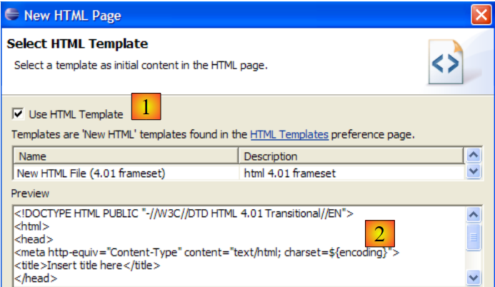
باستخدام (1)، يمكننا إنشاء ملف HTML مملوء مسبقًا بـ (2). إذا قمنا بإلغاء تحديد (1)، فسننشئ ملف HTML فارغًا. نترك (1) محددًا للاستفادة من قالب الكود. نكمل المعالج بالنقر فوق [إنهاء]. ثم يتم إنشاء ملف [index.html]:

بالمحتوى التالي:
<!DOCTYPE HTML PUBLIC "-//W3C//DTD HTML 4.01 Transitional//EN">
<html>
<head>
<meta http-equiv="Content-Type" content="text/html; charset=ISO-8859-1">
<title>Insert title here</title>
</head>
<body>
</body>
</html>
نقوم بتعديل هذا الملف على النحو التالي:
<!DOCTYPE HTML PUBLIC "-//W3C//DTD HTML 4.01 Transitional//EN">
<html>
<head>
<meta http-equiv="Content-Type" content="text/html; charset=ISO-8859-1">
<title>Application personne</title>
</head>
<body>
Application personne active...
<br>
<br>
Vous êtes sur la page d'accueil
</body>
</html>
3.3. اختبار الصفحة الرئيسية
إذا لم تكن موجودة، فاعرض طريقة عرض [الخوادم] باستخدام الخيار [نافذة -> إظهار طريقة العرض -> أخرى -> الخوادم]، ثم انقر بزر الماوس الأيمن على خادم Tomcat 5.5:

يتيح لك الخيار [إضافة وإزالة الكائنات] أعلاه إضافة أو إزالة تطبيقات الويب من خادم Tomcat:

يتم سرد مشاريع الويب التي يتعرف عليها Eclipse في (1). يمكنك تسجيلها في خادم Tomcat باستخدام (2). تظهر تطبيقات الويب المسجلة في خادم Tomcat في (4). يمكنك إلغاء تسجيلها باستخدام (3). دعنا نسجل مشروع [person]:
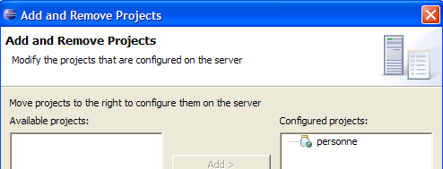
ثم أكمل معالج التسجيل بالنقر فوق [إنهاء]. تُظهر طريقة العرض [الخوادم] أن مشروع [person] قد تم تسجيله على Tomcat:
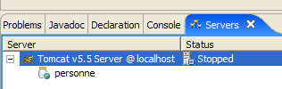
الآن، لنقم بتشغيل خادم Tomcat:
 | 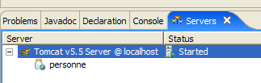 |
قم بتشغيل متصفح الويب:

ثم أدخل عنوان URL [http://localhost:8080/personne]. هذا العنوان هو جذر تطبيق الويب. لم يتم طلب أي مستند. في هذه الحالة، يتم عرض الصفحة الرئيسية للتطبيق. إذا لم تكن موجودة، يتم الإبلاغ عن خطأ. هنا، الصفحة الرئيسية موجودة. وهي ملف [index.html] الذي أنشأناه سابقًا. والنتيجة هي كما يلي:

وهذا يتطابق مع المتوقع. الآن، دعونا نستخدم متصفحًا خارج Eclipse ونطلب نفس عنوان URL:

وبالتالي، يمكن الوصول إلى تطبيق الويب [person] خارج Eclipse أيضًا.
3.4. إنشاء نموذج HTML
سنقوم الآن بإنشاء مستند HTML ثابت [form.html] في المجلد [person]:

لإنشائه، اتبع الإجراء الموضح في القسم 3.2، الصفحة 33. وسيكون محتواه كما يلي:
<!DOCTYPE HTML PUBLIC "-//W3C//DTD HTML 4.01 Transitional//EN">
<html>
<head>
<title>Personne - formulaire</title>
</head>
<body>
<center>
<h2>Personne - formulaire</h2>
<hr>
<form action="" method="post">
<table>
<tr>
<td>Nom</td>
<td><input name="txtNom" value="" type="text" size="20"></td>
</tr>
<tr>
<td>Age</td>
<td><input name="txtAge" value="" type="text" size="3"></td>
</tr>
</table>
<table>
<tr>
<td><input type="submit" value="Envoyer"></td>
<td><input type="reset" value="Retablir"></td>
<td><input type="button" value="Effacer"></td>
</tr>
</table>
</form>
</center>
</body>
</html>
يتوافق كود HTML أعلاه مع النموذج أدناه:

نوع HTML | اسم | كود HTML | الدور | |
<input type="text"> | txtName | السطر 14 | أدخل الاسم | |
<input type="text"> | txtAge | السطر 18 | إدخال العمر | |
<input type="submit"> | السطر 23 | إرسال القيم المدخلة إلى الخادم على عنوان URL /person1/main | ||
<input type="reset"> | السطر 24 | لاستعادة الصفحة إلى الحالة التي استقبلها بها المتصفح في البداية | ||
<input type="button"> | السطر 25 | لمسح محتويات حقول الإدخال [1] و[2] |
لنحفظ المستند في المجلد <person>/WebContent. قم بتشغيل Tomcat إذا لزم الأمر. باستخدام متصفح، انتقل إلى عنوان URL http://localhost:8080/personne/formulaire.html:

فيما يلي بنية العميل/الخادم لهذا التطبيق الأساسي:

يقع خادم الويب بين المستخدم وتطبيق الويب ولم يتم تصويره هنا. [formulaire.html] هو مستند ثابت يعرض نفس المحتوى لكل طلب من العميل. تهدف برمجة الويب إلى إنشاء محتوى مخصص لطلب العميل. ثم يتم إنشاء هذا المحتوى برمجياً. أحد الحلول هو استخدام JSP (صفحة خادم Java) بدلاً من ملف HTML الثابت. وهذا ما سنقوم بفحصه الآن.
3.5. إنشاء صفحة JSP
المراجع [ref1]: الفصل 1، الفصل 2: 2.2، 2.2.1، 2.2.2، 2.2.3، 2.2.4
يتم تحويل بنية العميل/الخادم السابقة على النحو التالي:

صفحة JSP هي نوع من صفحات HTML المعلمة. لا تتلقى بعض عناصر الصفحة قيمها إلا في وقت التشغيل. ويتم حساب هذه القيم بواسطة البرنامج. وبالتالي، لدينا صفحة ديناميكية: قد تؤدي الطلبات المتتالية للصفحة إلى استجابات مختلفة. هنا، نشير إلى صفحة HTML التي يعرضها متصفح العميل على أنها الاستجابة. في النهاية، يتلقى المتصفح دائمًا مستند HTML. يتم إنشاء مستند HTML هذا بواسطة خادم الويب من صفحة JSP، التي تعمل كقالب. يتم استبدال عناصرها الديناميكية بقيمها الفعلية في وقت إنشاء مستند HTML.
لإنشاء صفحة JSP، انقر بزر الماوس الأيمن على مجلد [WebContent] واختر الخيار [New -> Other]:

نختار النوع [JSP] ونضغط على [Next] ->

في الأعلى، نختار المجلد الأصلي [WebContent] في (1) أو (2)، ثم نحدد في (3) اسم الملف المراد إنشاؤه. بمجرد الانتهاء من ذلك، ننتقل إلى الصفحة التالية من المعالج:

باستخدام (1)، يمكننا إنشاء ملف JSP مملوء مسبقًا بـ (2). إذا قمنا بإلغاء تحديد (1)، فإننا ننشئ ملف JSP فارغًا. نترك (1) محددًا للاستفادة من قالب الكود. نكمل المعالج بالنقر على [Finish]. ثم يتم إنشاء ملف [formulaire.jsp]:

بالمحتوى التالي:
<%@ page language="java" contentType="text/html; charset=ISO-8859-1" pageEncoding="ISO-8859-1"%>
<!DOCTYPE HTML PUBLIC "-//W3C//DTD HTML 4.01 Transitional//EN">
<html>
<head>
<meta http-equiv="Content-Type" content="text/html; charset=ISO-8859-1">
<title>Insert title here</title>
</head>
<body>
</body>
</html>
تشير السطر 1 إلى أننا نتعامل مع صفحة JSP. نقوم بتحويل النص أعلاه على النحو التالي:
<%@ page language="java" contentType="text/html; charset=ISO-8859-1"
pageEncoding="ISO-8859-1"%>
<!DOCTYPE HTML PUBLIC "-//W3C//DTD HTML 4.01 Transitional//EN">
<%
// on récupère les paramètres
String nom=request.getParameter("txtNom");
if(nom==null) nom="inconnu";
String age=request.getParameter("txtAge");
if(age==null) age="xxx";
%>
<html>
<head>
<meta http-equiv="Content-Type" content="text/html; charset=ISO-8859-1">
<title>Personne - formulaire</title>
</head>
<body>
<center>
<h2>Personne - formulaire</h2>
<hr>
<form action="" method="post">
<table>
<tr>
<td>Nom</td>
<td><input name="txtNom" value="<%= nom %>" type="text" size="20"></td>
</tr>
<tr>
<td>Age</td>
<td><input name="txtAge" value="<%= age %>" type="text" size="3"></td>
</tr>
</table>
<table>
<tr>
<td><input type="submit" value="Envoyer"></td>
<td><input type="reset" value="Rétablir"></td>
<td><input type="button" value="Effacer"></td>
</tr>
</table>
</form>
</center>
</body>
</html>
أصبح المستند الذي كان ثابتًا في البداية ديناميكيًا الآن من خلال إدخال كود Java. بالنسبة لهذا النوع من المستندات، سنقوم دائمًا بما يلي:
- نضع كود Java في بداية المستند لاسترداد المعلمات اللازمة لعرض المستند. غالبًا ما توجد هذه المعلمات في كائن الطلب. يمثل هذا الكائن طلب العميل. وقد يكون قد مر عبر عدة سيرفلتات وصفحات JSP التي ربما أثرت محتواه. هنا، سيأتي مباشرة من المتصفح.
- يتبع ذلك كود HTML. وعادةً ما يعرض ببساطة المتغيرات التي تم حسابها مسبقًا في كود Java باستخدام علامات <%= variable %>. لاحظ هنا أن علامة = تقع مباشرةً بجوار علامة %. وهذا سبب شائع لحدوث الأخطاء.
ماذا يفعل المستند الديناميكي السابق؟
- الأسطر 6-9: يسترد معلمتين من الطلب، باسم [txtNom] و [txtAge]، ويخصص قيمهما للمتغيرين [nom] (السطر 6) و [age] (السطر 8). إذا لم يعثر على المعلمات، فإنه يخصص قيمًا افتراضية للمتغيرات المرتبطة.
- يعرض قيم المتغيرين [name، age] في كود HTML التالي (السطران 25 و29).
دعونا نجري اختبارًا أوليًا. قم بتشغيل Tomcat إذا لزم الأمر، ثم استخدم متصفحًا لطلب عنوان URL http://localhost:8080/personne/formulaire.jsp:

تم استدعاء مستند form.jsp دون تمرير أي معلمات. وبالتالي، تم عرض القيم الافتراضية. الآن دعونا نطلب عنوان URL http://localhost:8080/personne/formulaire.jsp?txtNom=martin&txtAge=14:

هذه المرة، قمنا بتمرير المعلمات txtNom وtxtAge إلى صفحة form.jsp، وهو ما تتوقعه الصفحة. ثم قامت بعرضهما. نعلم أن هناك طريقتين لتمرير المعلمات إلى صفحة ويب: GET وPOST. في كلتا الحالتين، يتم تخزين المعلمات الممررة في كائن الطلب المحدد مسبقًا. هنا، تم تمريرها باستخدام طريقة GET.
3.6. إنشاء سيرفلت
المراجع [ref1]: الفصل 1، الفصل 2: 2.1، 2.1.1، 2.1.2، 2.3.1
في الإصدار السابق، كانت صفحة JSP تتولى معالجة طلب العميل. عند أول استدعاء لهذه الصفحة، يقوم خادم الويب — في هذه الحالة، Tomcat — بإنشاء فئة Java من الصفحة وتجميعها. ونتيجة هذا التجميع هي التي تعالج طلب العميل في النهاية. الفئة التي تم إنشاؤها من صفحة JSP هي سيرفلت لأنها تنفذ واجهة [javax.Servlet]:

يمكن معالجة طلب العميل بواسطة أي فئة تنفذ هذه الواجهة. سنقوم الآن بإنشاء مثل هذه الفئة: ServletFormulaire. يتم تحويل بنية العميل/الخادم السابقة على النحو التالي:

مع البنية القائمة على JSP، تم إنشاء مستند HTML المرسل إلى العميل بواسطة خادم الويب من صفحة JSP التي كانت بمثابة قالب. هنا، سيتم إنشاء مستند HTML المرسل إلى العميل بالكامل بواسطة السيرفلت.
3.6.1. إنشاء السيرفلت
في Eclipse، انقر بزر الماوس الأيمن على المجلد [src] واختر الخيار لإنشاء فئة:

ثم حدد خصائص الفئة المراد إنشاؤها:

في (1)، أدخل اسم الحزمة؛ وفي (2)، أدخل اسم الفئة المراد إنشاؤها. يجب أن تكون هذه الفئة ممددة للفئة المحددة في (3). ليس هناك حاجة إلى كتابة الاسم الكامل للفئة بنفسك. يتيح الزر (4) الوصول إلى الفئات الموجودة حاليًا في مسار فئات تطبيق الويب:

في (1)، اكتب اسم الفئة التي تبحث عنها. في (2)، سترى الفئات الموجودة في مسار الفئات التي تحتوي أسماؤها على السلسلة التي كتبتها في (1).
بعد تأكيد معالج الإنشاء، يتم تعديل مشروع الويب [person] على النحو التالي:

تم إنشاء الفئة [ServletFormulaire] مع هيكل أساسي للرمز:

تُظهر لقطة الشاشة أعلاه أن Eclipse يعرض [تحذيرًا] في السطر الذي يعلن عن الفئة. انقر على الرمز (المصباح الكهربائي) الذي يشير إلى هذا [التحذير]:

بعد النقر على (1)، تُقترح حلول لإزالة [التحذير] في (2). يؤدي اختيار أحدها إلى ظهور التغيير في الكود الذي سينتج عن هذا الاختيار في (3).
أدخلت Java 1.5 تغييرات على لغة Java، وما كان صحيحًا في الإصدار السابق قد يؤدي الآن إلى ظهور [تحذيرات]. لا تشير هذه التحذيرات إلى أخطاء من شأنها منع ترجمة الفئة. إنها موجودة لتلفت انتباه المطور إلى أجزاء الكود التي يمكن تحسينها. يشير [التحذير] الحالي إلى أن الفئة يجب أن تحتوي على رقم إصدار. ويُستخدم هذا في تسلسل/إلغاء تسلسل الكائنات، أي عندما يجب تحويل كائن Java .class في الذاكرة إلى تسلسل من البتات المرسلة بالتتابع في دفق الكتابة، أو العكس عندما يجب إنشاء كائن Java .class في الذاكرة من تسلسل من البتات المقروءة بالتتابع في دفق القراءة. كل هذا بعيد كل البعد عن اهتماماتنا الحالية. لذلك سنطلب من المُترجم تجاهل هذا التحذير عن طريق اختيار الخيار [Add @SuppressWarnings ...]. يصبح الكود عندئذٍ كما يلي:

لم يعد هناك [تحذيرات]. يُسمى السطر المضاف "تعليقًا"، وهو مفهوم تم تقديمه في Java 1.5. سنكمل هذا الكود لاحقًا.
3.6.2. مسار فئة مشروع Eclipse
مسار الفئات لتطبيق Java هو مجموعة المجلدات وملفات .jar التي يتم البحث فيها عندما يقوم المُجمِّع بتجميعه أو عندما تقوم JVM بتنفيذه. هذان المساران ليسا متطابقين بالضرورة، حيث إن بعض الفئات لا تكون مطلوبة إلا في وقت التشغيل وليس أثناء التجميع. يحتوي كل من مُجمِّع Java و JVM على وسيطة تسمح لك بتحديد مسار الفئات للتطبيق المراد تجميعه أو تنفيذه. بطريقة شفافة إلى حد ما بالنسبة للمستخدم، يتولى Eclipse إنشاء هذه الوسيطة وتمريرها إلى JVM.
كيف يمكنك تحديد عناصر مسار فئة مشروع Eclipse؟ باستخدام الخيار [<project> / Build Path / Configure Build Path]:

يؤدي هذا إلى ظهور معالج التكوين التالي:

تسمح لك علامة التبويب (1) [Libraries] بتحديد قائمة ملفات .jar التي تشكل جزءًا من مسار فئات التطبيق. وبالتالي، يتم البحث عن هذه الملفات بواسطة JVM عندما يطلب التطبيق فئة. تسمح لك الأزرار [2] و[3] بإضافة أرشيفات إلى مسار الفئات. يتيح لك الزر [2] تحديد الأرشيفات الموجودة في مجلدات المشاريع التي يديرها Eclipse، بينما يتيح لك الزر [3] تحديد أي أرشيف من نظام ملفات الكمبيوتر.
يظهر أعلاه ثلاث مكتبات:
- [مكتبة نظام JRE]: المكتبة الأساسية لمشاريع Eclipse Java:

- [Tomcat v5.5 runtime]: مكتبة مقدمة من خادم Tomcat. تحتوي على الفئات اللازمة لتطوير الويب. يتم تضمين هذه المكتبة في أي مشروع ويب Eclipse مرتبط بخادم Tomcat.

إنه أرشيف [servlet-api.jar] الذي يحتوي على فئة [javax.servlet.http.HttpServlet]، وهي الفئة الأم لفئة [ServletFormulaire] التي نقوم بإنشائها حاليًا. ونظرًا لوجود هذا الأرشيف في مسار فئات التطبيق (Classpath)، فقد تم اقتراحه كفئة أم في المعالج الموضح أدناه.

لو لم يكن الأمر كذلك، لما ظهرت في الاقتراحات في [2]. لذلك، إذا كنت تريد في هذا المعالج الإشارة إلى فئة أصلية ولم يتم اقتراحها، فهذا يعني إما أنك أخطأت في كتابة اسم الفئة، أو أن الأرشيف الذي يحتوي عليها ليس موجودًا في مسار فئات التطبيق.
- تحتوي [مكتبات تطبيقات الويب] على الأرشيفات الموجودة في مجلد [WEB-INF/lib] الخاص بالمشروع. هنا، المجلد فارغ:

تظهر الأرشيفات الموجودة في مسار فئات مشروع Eclipse في مستكشف المشروع. على سبيل المثال، بالنسبة لمشروع الويب [person]:

يتيح لنا مستكشف المشروع الوصول إلى محتويات هذه الأرشيفات:
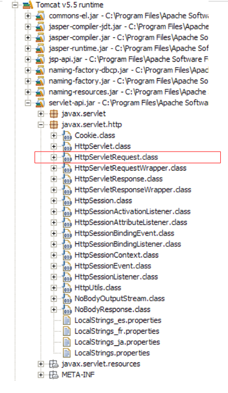
كما هو موضح أعلاه، يمكننا أن نرى أن الأرشيف [servlet-api.jar] يحتوي على فئة [javax.servlet.http.HttpServlet].
3.6.3. تكوين Servlet
المراجع [ref1]: الفصل 2: 2.3، 2.3.1، 2.3.2، 2.3.3، 2.3.4
يُستخدم ملف [WEB-INF/web.xml] لتكوين تطبيق الويب:
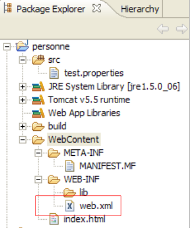
بالنسبة لمشروع [person]، يبدو هذا الملف حاليًا كما يلي (انظر الصفحة 32):
<?xml version="1.0" encoding="UTF-8"?>
<web-app id="WebApp_ID" version="2.4"
xmlns="http://java.sun.com/xml/ns/j2ee"
xmlns:xsi="http://www.w3.org/2001/XMLSchema-instance"
xsi:schemaLocation="http://java.sun.com/xml/ns/j2ee http://java.sun.com/xml/ns/j2ee/web-app_2_4.xsd">
<display-name>personne</display-name>
<welcome-file-list>
<welcome-file>index.html</welcome-file>
</welcome-file-list>
</web-app>
إنه يشير فقط إلى وجود ملف ترحيبي (السطر 8). نقوم بتعديله للإعلان عن:
- وجود سيرفلت [ServletFormulaire]
- عناوين URL التي تتعامل معها هذه الخدمة
- معلمات تهيئة السيرفلت
سيكون ملف web.xml لتطبيقنا كما يلي:
<?xml version="1.0" encoding="UTF-8"?>
<web-app id="WebApp_ID" version="2.4"
xmlns="http://java.sun.com/xml/ns/j2ee"
xmlns:xsi="http://www.w3.org/2001/XMLSchema-instance"
xsi:schemaLocation="http://java.sun.com/xml/ns/j2ee http://java.sun.com/xml/ns/j2ee/web-app_2_4.xsd">
<display-name>personne</display-name>
<servlet>
<servlet-name>formulairepersonne</servlet-name>
<servlet-class>
istia.st.servlets.personne.ServletFormulaire
</servlet-class>
<init-param>
<param-name>defaultNom</param-name>
<param-value>inconnu</param-value>
</init-param>
<init-param>
<param-name>defaultAge</param-name>
<param-value>XXX</param-value>
</init-param>
</servlet>
<servlet-mapping>
<servlet-name>formulairepersonne</servlet-name>
<url-pattern>/formulaire</url-pattern>
</servlet-mapping>
<welcome-file-list>
<welcome-file>index.html</welcome-file>
</welcome-file-list>
</web-app>
النقاط الرئيسية في ملف التكوين هذا هي كما يلي:
- السطور 7–24 تتعلق بوجود سيرفلت [ServletFormulaire]
- الأسطر 7–20: يتم تكوين السيرفلت بين العلامتين <servlet> و</servlet>. يمكن أن يحتوي التطبيق على سيرفلتات متعددة، وبالتالي على أقسام تكوين <servlet>...</servlet> متعددة.
- السطر 8: تُعيّن علامة <servlet-name> اسمًا للـservlet — ويمكن أن يكون أي اسم
- الأسطر 9–11: تحدد العلامة <servlet-class> الاسم الكامل لفئة السيرفلت. سيبحث Tomcat عن هذه الفئة في مسار فئات مشروع الويب [personne]. وسيجدها في [build/classes]:

- الأسطر 12–15: تُستخدم العلامة <init-param> لتمرير معلمات التكوين إلى السيرفلت. يتم قراءة هذه المعلمات عمومًا في طريقة init الخاصة بالسيرفلت لأن معلمات التكوين الخاصة به يجب أن تكون معروفة بمجرد تحميله لأول مرة.
- الأسطر 13-14: تحدد علامة <param-name> اسم المعلمة، وتحدد <param-value> قيمتها.
- تحدد الأسطر 12-15 معلمة [defaultName، "unknown"]، وتحدد الأسطر 16-19 معلمة [defaultAge، "XXX"]
- الأسطر 21-24: تُستخدم العلامة <servlet-mapping> لربط سيرفلت (servlet-name) بنمط URL (url-pattern). هنا، النمط بسيط. فهو يحدد أنه كلما اتخذ عنوان URL شكل /formulaire، يجب استخدام سيرفلت formulairepersonne، أي الفئة [istia.st.servlets.ServletFormulaire] (الأسطر 8–11). لذلك، لا يقبل سيرفلت [formulairepersonne] سوى عنوان URL واحد فقط.
3.6.4. كود السيرفلت [ServletFormulaire]
سيحتوي سيرفلت [ServletFormulaire] على الكود التالي:
بمجرد قراءة السيرفلت، يمكننا أن نرى أنه أكثر تعقيدًا بكثير من صفحة JSP المقابلة. هذه قاعدة عامة: السيرفلت غير مناسب لتوليد كود HTML. صفحات JSP مصممة لهذا الغرض. سنعود إلى هذا الموضوع لاحقًا. دعونا نوضح بعض النقاط المهمة حول السيرفلت أعلاه:
- عند استدعاء السيرفلت لأول مرة، يتم استدعاء طريقة init (السطر 20). هذه هي المرة الوحيدة التي يتم فيها استدعاؤها.
- إذا تم استدعاء السيرفلت عبر طريقة HTTP GET، يتم استدعاء طريقة doGet (السطر 32) لمعالجة طلب العميل.
- إذا تم استدعاء السيرفلت عبر طريقة HTTP POST، يتم استدعاء طريقة doPost (السطر 82) لمعالجة طلب العميل.
تُستخدم طريقة init هنا لاسترداد قيم معلمات التهيئة المسماة "defaultName" و"defaultAge" من ملف [web.xml]. وتُعد طريقة init، التي يتم تنفيذها عند تحميل السيرفلت لأول مرة، المكان المناسب لاسترداد محتويات ملف [web.xml].
- السطر 22: يتم استرداد تكوين [config] لمشروع الويب. يعكس هذا الكائن محتويات ملف [WEB-INF/web.xml] الخاص بالتطبيق.
- السطر 23: في هذا التكوين، نسترد القيمة String للمعلمة المسماة "defaultName". ستحتوي هذه المعلمة على اسم شخص ما. إذا لم تكن موجودة، فستكون القيمة null.
- السطران 24-25: إذا لم تكن المعلمة المسماة "defaultName" موجودة، يتم تعيين قيمة افتراضية للمتغير [defaultName].
- الأسطر 26-29: نقوم بنفس الشيء بالنسبة للمعلمة المسماة "defaultAge".
تشير طريقة doPost إلى طريقة doGet. وهذا يعني أنه يمكن للعميل إرسال معلماته باستخدام طلب POST أو GET.
طريقة doGet:
- السطر 32: تستقبل الطريقة معلمتين، هما `request` و`response`. `request` هو كائن يمثل طلب العميل بالكامل. وهو من النوع `HttpServletRequest`، وهو واجهة. `response` هو من النوع `HttpServletResponse`، وهو أيضًا واجهة. يُستخدم كائن `response` لإرسال استجابة إلى العميل.
- يُستخدم request.getParameter("param") لاسترداد قيمة المعلمة المسماة "param" من طلب العميل. في السطر 36، نسترد قيمة المعلمة "txtNom"؛ وفي السطر 40، نسترد قيمة المعلمة "txtAge". إذا لم تكن هذه المعلمات موجودة في الطلب، يتم تعيين قيمة المعلمة إلى null.
- الأسطر 37–39: إذا لم تكن المعلمة "txtNom" موجودة في الطلب، يتم تعيين المتغير "nom" بالاسم الافتراضي "defaultNom" الذي تم تهيئته في طريقة init. ويتم إجراء الأمر نفسه في الأسطر 41–43 بالنسبة للعمر.
- السطر 45: تُستخدم response.setContentType(String) لتعيين قيمة رأس HTTP Content-Type. يُخبر هذا الرأس العميل بطبيعة المستند الذي سيتلقاه. يشير النوع text/html إلى مستند HTML.
- السطر 46: تُستخدم response.getWriter() للحصول على دفق كتابة إلى العميل
- الأسطر 47–78: يتم كتابة مستند HTML المراد إرساله إلى العميل إلى دفق الكتابة الذي تم الحصول عليه في السطر 46.
سيؤدي ترجمة هذا السيرفلت إلى إنشاء ملف .class في المجلد [build/classes] التابع لمشروع [person]:

يُنصح القراء بالرجوع إلى وثائق Java الخاصة بالسيرفلت. يمكن استخدام Tomcat لهذا الغرض. يوجد رابط [Documentation] على الصفحة الرئيسية لـ Tomcat 5:

يؤدي هذا الرابط إلى صفحة يُنصح القارئ باستكشافها. الرابط إلى وثائق السيرفلت هو كما يلي:

3.6.5. اختبار السيرفلت
نحن جاهزون لإجراء اختبار. ابدأ تشغيل خادم Tomcat إذا لزم الأمر.

ثم، باستخدام متصفح، اطلب عنوان URL [http://localhost:8080/personne/formulaire]. هنا، نطلب عنوان URL [/form] من السياق [/person]. يحدد ملف [web.xml] لهذا السياق أن عنوان URL [/form] يتم معالجته بواسطة السيرفلت المسمى [formperson]. في نفس الملف، تم تحديد أن هذا السيرفلت هو الفئة [istia.st.servlets.ServletFormulaire]. لذلك، سيكلف Tomcat هذه الفئة بمعالجة طلب العميل. إذا لم تكن الفئة محملة بالفعل، فسيتم تحميلها. ثم ستبقى في الذاكرة للطلبات المستقبلية.
نحصل على النتيجة التالية باستخدام متصفح Eclipse المدمج:

نحصل على القيم الافتراضية للاسم والعمر، كما هو محدد في ملف [web.xml]. الآن دعونا نطلب عنوان URL [http://localhost:8080/personne/formulaire?txtNom=tintin&txtAge=30]:

هذه المرة، نحصل على المعلمات التي تم تمريرها في الطلب. ندعو القارئ إلى مراجعة كود السيرفلت [ServletFormulaire] إذا لم يفهم هاتين النتيجتين.
3.6.6. إعادة التحميل التلقائي لسياق تطبيق الويب
لنبدأ تشغيل Tomcat:
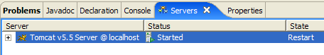
ثم نقوم بتعديل كود السيرفلت على النحو التالي:
- تم تعديل السطر 8
لنحفظ الفئة الجديدة. سيؤدي هذا الحفظ إلى إعادة تجميع تلقائية لفئة [ServletFormulaire] بواسطة Eclipse، والتي سيكتشفها Tomcat. ثم سيعيد تحميل سياق تطبيق الويب [personne] لتعكس التغييرات. يظهر هذا في سجلات عرض [console]:

دعونا نطلب عنوان URL [http://localhost:8080/personne/formulaire] دون إعادة تشغيل Tomcat:

تم تطبيق التغيير بنجاح.
الآن، دعونا نعدل ملف [web.xml] على النحو التالي:
<?xml version="1.0" encoding="UTF-8"?>
<web-app id="WebApp_ID" version="2.4"
xmlns="http://java.sun.com/xml/ns/j2ee"
xmlns:xsi="http://www.w3.org/2001/XMLSchema-instance"
xsi:schemaLocation="http://java.sun.com/xml/ns/j2ee http://java.sun.com/xml/ns/j2ee/web-app_2_4.xsd">
<display-name>personne</display-name>
<servlet>
<servlet-name>formulairepersonne</servlet-name>
...
<init-param>
<param-name>defaultNom</param-name>
<param-value>INCONNU</param-value>
</init-param>
...
</servlet>
...
</web-app>
- تم تعديل السطر 12
الآن بعد الانتهاء من ذلك، دعونا نحفظ ملف [web.xml] الجديد. في عرض [console]، لا يوجد سجل يشير إلى إعادة تحميل سياق التطبيق. دعونا نطلب عنوان URL [http://localhost:8080/personne/formulaire] دون إعادة تشغيل Tomcat:
لم يتم تطبيق التغيير. دعونا نعيد تشغيل Tomcat [انقر بزر الماوس الأيمن على الخادم -> إعادة التشغيل -> بدء التشغيل]:

ثم نطلب عنوان URL [http://localhost:8080/personne/formulaire] مرة أخرى:

هذه المرة، يظهر التغيير الذي تم إجراؤه في [web.xml].
لا يؤدي التغيير في [web.xml] تلقائيًا إلى إعادة تحميل التطبيق بحيث يتضمن ملف التكوين الجديد. لإجبار تطبيق الويب على إعادة التحميل، يمكنك إعادة تشغيل Tomcat كما فعلنا، ولكن هذه عملية بطيئة إلى حد ما. يفضل استخدام أداة [manager] لإدارة التطبيقات التي تم نشرها في Tomcat. لكي يعمل هذا، يجب أن يكون Tomcat قد تم تكوينه داخل Eclipse كما هو موضح في القسم 2.5.
أولاً، باستخدام متصفح Eclipse الداخلي، أدخل عنوان URL [http://localhost:8080] ثم اتبع رابط [Tomcat Manager]، كما هو موضح في نهاية القسم 2.5:

لنفتح متصفحًا ثانيًا [انقر بزر الماوس الأيمن على المتصفح -> محرر جديد]:
 |  |
في هذا المتصفح الثاني، أدخل عنوان URL [http://localhost:8080/formulaire]:

قم بتعديل ملف [web.xml] على النحو التالي، ثم احفظه:
<!-- ServletFormulaire -->
<servlet>
<servlet-name>formulairepersonne</servlet-name>
<servlet-class>
istia.st.servlets.personne.ServletFormulaire
</servlet-class>
<init-param>
<param-name>defaultNom</param-name>
<param-value>YYY</param-value>
</init-param>
<init-param>
<param-name>defaultAge</param-name>
<param-value>XXX</param-value>
</init-param>
</servlet>
ثم اطلب عنوان URL [http://localhost:8080/formulaire] مرة أخرى. يمكننا أن نرى أن التغيير لم يتم تطبيقه. الآن، انتقل إلى المتصفح الأول وأعد تحميل تطبيق [person]:

ثم اطلب عنوان URL [http://localhost:8080/formulaire] مرة أخرى باستخدام المتصفح الثاني:

تم تطبيق التغيير على [web.xml]. في الممارسة العملية، من المفيد فتح متصفح على تطبيق Tomcat [manager] للتعامل مع هذا النوع من المواقف.
3.7. التفاعل بين صفحة Servlet و JSP
المراجع [ref1]: الفصل 2: 2.3.7
لنعد إلى البنيتين اللتين درسناهما:

لا تعتبر أي من هاتين البنيتين مرضية. فكلاهما يعاني من عيب مزج تقنيتين: برمجة Java، التي تتولى منطق تطبيق الويب، وترميز HTML، الذي يتولى عرض المعلومات في المتصفح.
- الحل القائم على JSP [1] له عيب يتمثل في خلط كود HTML وكود Java داخل نفس الصفحة. لم نرَ هذا في المثال الذي تناولناه، والذي كان بسيطًا. ولكن إذا كان على [formulaire.jsp] التحقق من صحة المعلمات [txtNom, txtAge] في طلب العميل، لكنا اضطررنا إلى وضع كود Java في الصفحة. وهذا سرعان ما يصبح أمرًا يصعب التحكم فيه.
- الحل [2]، القائم على سيرفلت، يطرح نفس المشكلة. على الرغم من وجود كود Java فقط في الفئة، إلا أنه يجب أن يولد مستند HTML. مرة أخرى، ما لم يكن مستند HTML بسيطًا، فإن إنشاؤه يصبح معقدًا ويكاد يكون من المستحيل صيانته.
سنتجنب خلط تقنيات Java و HTML من خلال اعتماد البنية التالية:
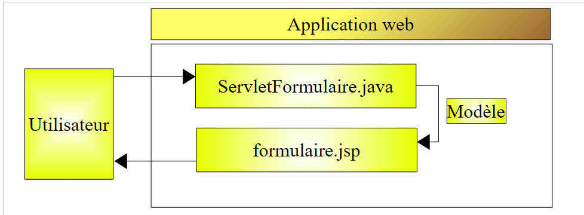
- يرسل المستخدم طلبه إلى السيرفلت. يقوم السيرفلت بمعالجته وإنشاء القيم للمعلمات الديناميكية لصفحة JSP [form.jsp]، والتي سيتم استخدامها لإنشاء استجابة HTML للعميل. تشكل هذه القيم ما يُعرف باسم قالب صفحة JSP.
- بمجرد اكتمال عملها، سيطلب السيرفلت من صفحة JSP [form.jsp] إنشاء استجابة HTML للعميل. وفي الوقت نفسه، سيزود صفحة JSP بالعناصر التي تحتاجها لإنشاء هذه الاستجابة — العناصر التي تشكل نموذج الصفحة.
سنستكشف الآن هذه البنية الجديدة.
3.7.1. البرنامج الخادم [ServletFormulaire2]
في البنية أعلاه، سيُسمى السيرفلت [ServletFormulaire2]. وسيتم إنشاؤه في نفس مشروع [personne] كما في السابق، جنبًا إلى جنب مع جميع السيرفلتات المستقبلية:

يتم إنشاء [ServletFormulaire2] أولاً عن طريق نسخ [ServletFormulaire] ولصقه داخل Eclipse:
- اختر [ServletFormulaire.java] -> انقر بزر الماوس الأيمن -> نسخ
- حدد [istia.st.servlets.personne] -> انقر بزر الماوس الأيمن -> لصق -> أعد تسميته إلى [ServletFormulaire2.java]
ثم نقوم بتعديل كود [ServletFormulaire2] على النحو التالي:
لم يتغير سوى الجزء الذي يولد استجابة HTTP (الأسطر 44–46):
- السطر 46: صفحة JSP `formulaire2.jsp` مسؤولة عن إنشاء الاستجابة. هذه الصفحة، التي لم نتناولها بعد، ستعرض المعلمات المسترجعة من طلب العميل: الاسم (الأسطر 35–38) والعمر (الأسطر 39–42).
- يتم وضع هاتين القيمتين في سمات الطلب، المرتبطة بمفاتيح. تتم إدارة سمات الطلب كقاموس.
- السطر 44: يتم وضع الاسم في الطلب المرتبط بالمفتاح "name"
- السطر 45: يتم وضع العمر في الطلب المرتبط بالمفتاح "age"
- السطر 46: يطلب عرض صفحة JSP [formulaire2.jsp]. يتم تمرير ما يلي كمعلمة إليها:
- طلب العميل، الذي يسمح لصفحة JSP بالوصول إلى سماتها التي تم تهيئتها للتو بواسطة السيرفلت
- الاستجابة [response]، والتي ستسمح لصفحة JSP بإنشاء استجابة HTTP للعميل
بمجرد كتابة فئة [ServletFormulaire2]، يظهر كودها المُجمَّع في [build/classes]:

3.7.2. صفحة JSP [formulaire2.jsp]
يتم إنشاء صفحة JSP formulaire2.jsp عن طريق نسخ صفحة [formulaire.jsp] ولصقها

ثم تعديلها على النحو التالي:
<%@ page language="java" contentType="text/html; charset=ISO-8859-1"
pageEncoding="ISO-8859-1"%>
<!DOCTYPE HTML PUBLIC "-//W3C//DTD HTML 4.01 Transitional//EN">
<%
// on récupère les valeurs nécessaire à l'affichage
String nom=(String)request.getAttribute("nom");
String age=(String)request.getAttribute("age");
%>
<html>
<head>
<meta http-equiv="Content-Type" content="text/html; charset=ISO-8859-1">
<title>Personne - formulaire2</title>
</head>
<body>
<center>
<h2>Personne - formulaire2</h2>
<hr>
<form action="" method="post">
<table>
<tr>
<td>Nom</td>
<td><input name="txtNom" value="<%= nom %>" type="text" size="20"></td>
</tr>
<tr>
<td>Age</td>
<td><input name="txtAge" value="<%= age %>" type="text" size="3"></td>
</tr>
</table>
<table>
<tr>
<td><input type="submit" value="Envoyer"></td>
<td><input type="reset" value="Rétablir"></td>
<td><input type="button" value="Effacer"></td>
</tr>
</table>
</form>
</center>
</body>
</html>
لم تتغير سوى الأسطر 4–8 مقارنة بـ [formulaire.jsp]:
- السطر 6: يسترد قيمة السمة المسماة "name" في [request]، وهي سمة أنشأتها خدمة [ServletFormulaire2].
- السطر 7: يقوم بنفس الشيء بالنسبة للسمة "age"
3.7.3. تكوين التطبيق
يتم تعديل ملف التكوين [web.xml] على النحو التالي:
<?xml version="1.0" encoding="UTF-8"?>
<web-app id="WebApp_ID" version="2.4"
xmlns="http://java.sun.com/xml/ns/j2ee"
xmlns:xsi="http://www.w3.org/2001/XMLSchema-instance"
xsi:schemaLocation="http://java.sun.com/xml/ns/j2ee http://java.sun.com/xml/ns/j2ee/web-app_2_4.xsd">
<display-name>personne</display-name>
<!-- ServletFormulaire -->
<servlet>
<servlet-name>formulairepersonne</servlet-name>
<servlet-class>
istia.st.servlets.personne.ServletFormulaire
</servlet-class>
<init-param>
<param-name>defaultNom</param-name>
<param-value>inconnu</param-value>
</init-param>
<init-param>
<param-name>defaultAge</param-name>
<param-value>XXXX</param-value>
</init-param>
</servlet>
<!-- ServletFormulaire 2-->
<servlet>
<servlet-name>formulairepersonne2</servlet-name>
<servlet-class>
istia.st.servlets.personne.ServletFormulaire2
</servlet-class>
<init-param>
<param-name>defaultNom</param-name>
<param-value>inconnu</param-value>
</init-param>
<init-param>
<param-name>defaultAge</param-name>
<param-value>XXX</param-value>
</init-param>
</servlet>
<!-- Mapping ServletFormulaire -->
<servlet-mapping>
<servlet-name>formulairepersonne</servlet-name>
<url-pattern>/formulaire</url-pattern>
</servlet-mapping>
<!-- Mapping ServletFormulaire 2-->
<servlet-mapping>
<servlet-name>formulairepersonne2</servlet-name>
<url-pattern>/formulaire2</url-pattern>
</servlet-mapping>
<!-- welcome files -->
<welcome-file-list>
<welcome-file>index.html</welcome-file>
</welcome-file-list>
</web-app>
احتفظنا بالكود الحالي وأضفنا:
- الأسطر 22–36: قسم <servlet> لتعريف السيرفلت الجديد ServletFormulaire2
- الأسطر 42–46: قسم <servlet-mapping> لربطه بعنوان URL /formulaire2
قم بتشغيل خادم Tomcat أو إعادة تشغيله إذا لزم الأمر. نطلب عنوان URL
http://localhost:8080/personne/formulaire2?txtNom=milou&txtAge=10:

نحصل على نفس النتيجة كما في السابق، لكن بنية تطبيقنا أصبحت الآن أكثر وضوحًا: سيرفلت يحتوي على منطق التطبيق ويفوض مهمة إرسال الاستجابة إلى العميل إلى صفحة JSP. سنستمر دائمًا بهذه الطريقة من الآن فصاعدًا.